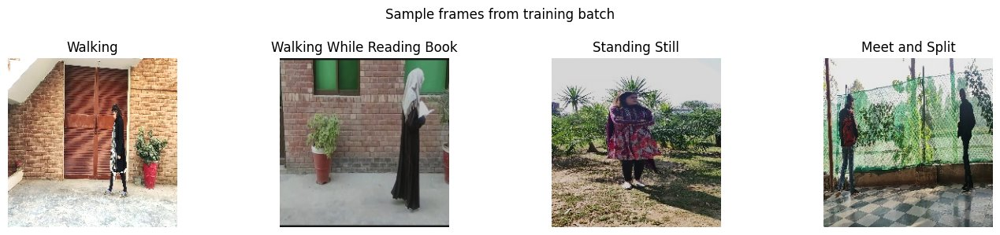
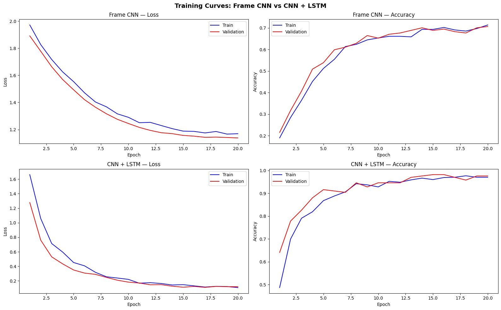
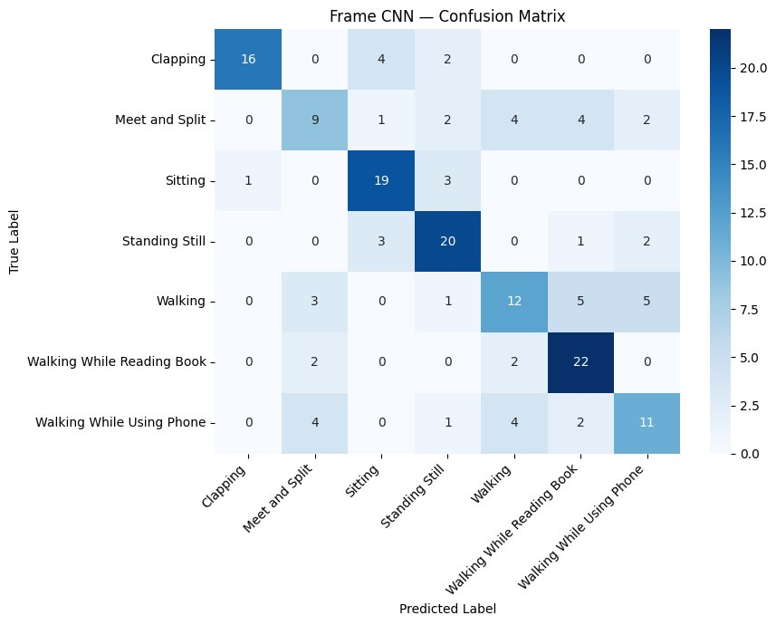
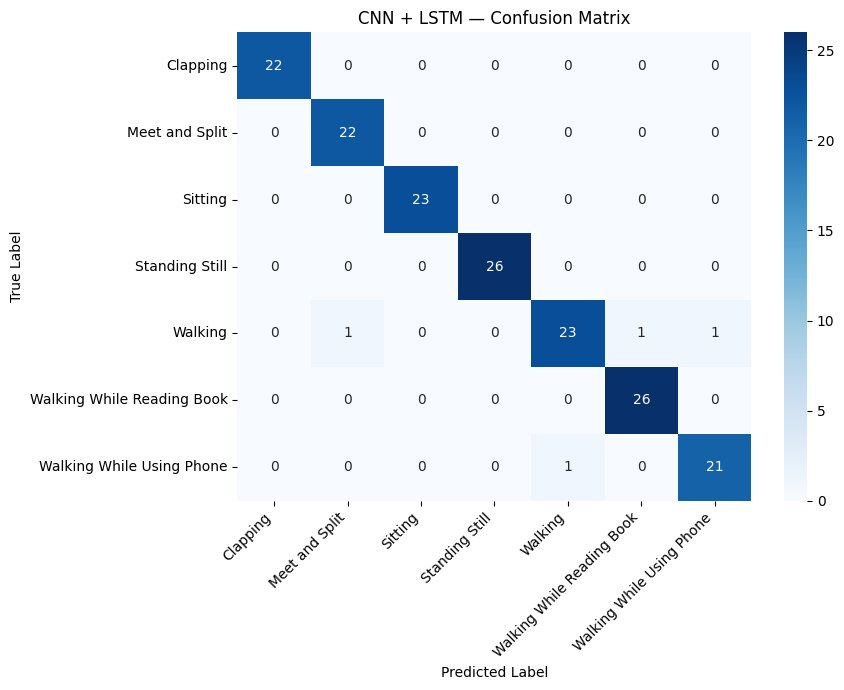
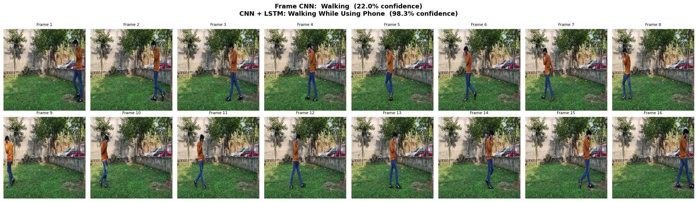

CS4210 · Spring 2026 · Kevin Hernandez
Frame-Based CNN vs. CNN + LSTM
Does motion over time actually matter for recognizing what someone is doing, or can a model look at a single photograph and figure it out? This project builds two models, trains them on identical data, and directly measures the gap.
The Question
Human activity recognition from video is a core computer vision challenge with applications in surveillance, assistive technology, and human-computer interaction. A fundamental open question is how much temporal context — motion over time — contributes to classification accuracy compared to static appearance alone.
This project answers that directly by training and comparing two architectures on the same 7-class video dataset. The Frame CNN sees a single still frame. The CNN + LSTM sees a sequence of 16 frames in order. Everything else — backbone, data, training settings, evaluation — is held constant.
Activities like Sitting and Standing Still are expected to be identifiable from appearance alone. Activities like Walking While Using Phone should require motion context to distinguish from plain walking.

Sample frames from the training set
System Design
Data Acquisition
1,113 video clips downloaded from Kaggle directly into Colab's local storage
using kagglehub authenticated via API token.
Raw videos never touch Google Drive — the dataset is ~15GB and Drive's free tier is 15GB.
Frame Extraction
OpenCV opens each video and samples 16 frames at uniformly spaced positions across the full duration. Each frame is resized to 224×224 and saved as a JPEG to Google Drive. This runs once and is skipped on subsequent sessions — bringing 15GB of video down to a few hundred megabytes of images.
Stratified Split
Clips split into train (779), validation (167), and test (167) using
sklearn's train_test_split with stratification —
all 7 classes are proportionally represented in every subset.
Split is done at the clip level so no frames from the same video appear in two splits.
Dataset Classes
FrameDataset returns one frame per clip
(random during training, middle frame during eval).
SequenceDataset returns all 16 frames
stacked as a tensor of shape (16, 3, 224, 224).
Training
Both models trained for 20 epochs with Adam (lr=1e-4), CrossEntropyLoss, and cosine annealing scheduler. Best validation checkpoint saved to Drive separately per model. ImageNet normalization and augmentation (random flip, color jitter) applied.
Architecture
Baseline
Pre-trained ResNet-18 with all backbone layers frozen. The final fully connected layer
is replaced — the original outputs 1,000 ImageNet scores, swapped for
Linear(512, 7) for our 7 activity classes.
Only 3,591 trainable parameters out of
11.1M total. Single frame input (3, 224, 224).
No information about motion — classifies from appearance alone.
Temporal
Same ResNet-18 backbone with the classifier stripped — used as a pure feature extractor
outputting a 512-dim vector per frame. All 16 frames pass through the CNN simultaneously
via batch reshape. An LSTM (hidden=256) reads the sequence; its final hidden state
feeds into Linear(256, 7).
790,279 trainable parameters.
Full sequence input (16, 3, 224, 224).
The LSTM's hidden state accumulates how the scene changes across all 16 frames.
Evaluation
Frame CNN
65%
Test Accuracy
CNN + LSTM
98%
Test Accuracy
| Activity Class | Frame CNN F1 | CNN + LSTM F1 |
|---|---|---|
| Clapping | 0.82 | 1.00 |
| Meet and Split | 0.45 | 0.98 |
| Sitting | 0.76 | 1.00 |
| Standing Still | 0.73 | 1.00 |
| Walking | 0.50 | 0.92 |
| Walking While Reading Book | 0.73 | 0.98 |
| Walking While Using Phone | 0.52 | 0.95 |

Training Curves — Frame CNN vs CNN + LSTM

Frame CNN — Confusion Matrix

CNN + LSTM — Confusion Matrix
Side-by-Side Inference
The predict_video() function extracts 16 uniformly
spaced frames from any video clip and runs both models simultaneously. Below is the result
on a Walking While Using Phone clip from the held-out test set.
The middle frame — the only input the Frame CNN had — shows a person mid-stride with no clearly visible phone interaction. Watching all 16 frames in sequence, the LSTM tracked the repeated hand-to-phone gesture and got it right at near-perfect confidence.
✕ Frame CNN
Walking
22.0% confidence
✓ CNN + LSTM
Walking While Using Phone
98.3% confidence

16 extracted frames — middle frame highlighted was the only input to Frame CNN
Source Code
The full implementation is available as a Jupyter notebook with all cell outputs preserved — including training logs, confusion matrices, and demo output. It runs end-to-end in Google Colab with a T4 GPU and requires only a Kaggle API token to reproduce.